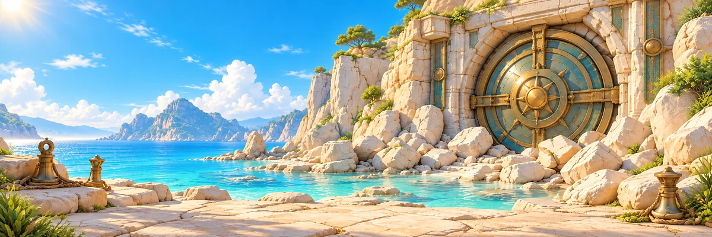

Vaultwake · vibrant, now playable
A limited live production slice: four Fieldworks objects, Rivet Rover, the board rim and the starting coast. Same gameplay, positions and saves. Other families and later scenes retain their existing art.
Previous · actual 48px
Live vibrant · actual 48px
Coral-orange housings, turquoise grips and clean silver working parts. The ivory surface stays quiet; gold is confined to edges and machinery details.
390px · actual gameplay captures
Identical fresh board and viewport. Both images are real Chromium captures from passing CI run 38223629768. Swipe horizontally on a phone; screens retain their 390 CSS-pixel width.
Download actual-size 48px comparison · Passing CI and mobile checks
Starting coast · live asset

Five targeted built-in image edits, no retries. Each uses its existing asset as the edit target. Rover and rim reuse existing vector/style code. No dependencies added. Remaining AI quota and billed credit cost are not visible.